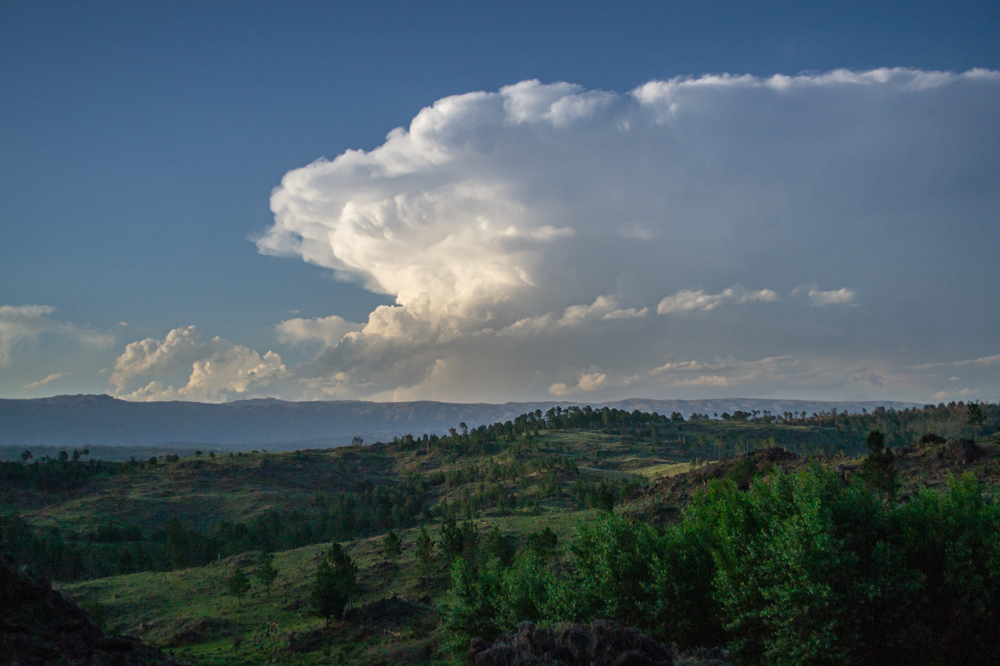
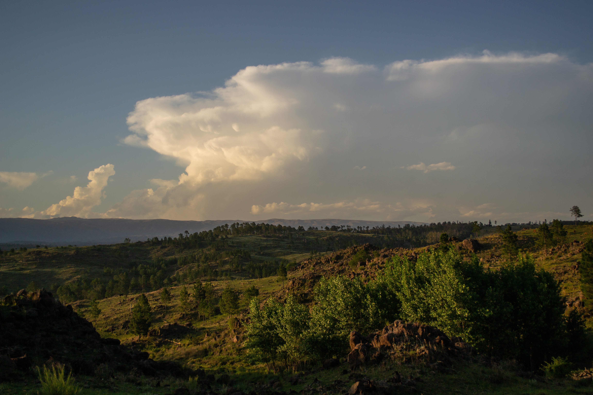

Conociendo Córdoba
Inicio
Areas turisticas
Valle de Traslasierras
Valle de Punilla
Valle de Calamuchita
Valle de Paravachasca
Norte y Noroeste
Sierras Chicas
Cordoba Capital
Actividades turisticas
Turismo aventura
Parques nacionales
Astroturismo
Caminos del vino
Turismo religioso
Sobre nosotros
Contacto
Regiones turisticas

